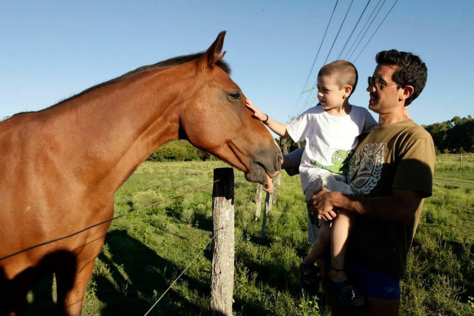

About me
Me llamo justo y esto es una prueba
Esto es DAM "Desarrollo de aplicaciones multiplataforma"Me gusta mucho la comida

Mis cosas
HTML
HTML son las siglas de HyperText Markup Language (Lenguaje de Marcado de Hipertexto) y es el lenguaje estándar para crear la estructura básica de las páginas web.
css
Las siglas CSS (Cascading Style Sheets) significan «Hojas de estilo en cascada» y parten de un concepto simple pero muy potente
HOLA
La forma más común de decir hola en inglés es “hello”. Además, existen numerosas palabras y expresiones equivalentes. Algunas son más informales, como “hi” o “hey” y otras, como “Good morning” o “It's good to see you”, se utilizan en contextos más formales.
AWOL
AWOL is an abbreviation for 'absent without leave'. The troops went AWOL to express their complaints about the camp. 2. adjective [usually verb-link ADJECTIVE] If you say that someone has gone AWOL, you mean that they have disappeared without telling anyone where they were going.
BRB
"Be right back" se traduce al español como "Vuelvo enseguida", "Ahora vuelvo" o "Ya vuelvo" y se usa para indicar que alguien se ausentará por un corto período de tiempo. Por ejemplo, puedes decir.
AYO
"Ayo" puede referirse a varias cosas. Un tutor o preceptor histórico para la crianza y educación de niños nobles, la palabra para "alegría" en idioma yoruba y el nombre de la cantante de este origen, o una expresión de internet que denota sorpresa, incredulidad o admiración
ayayay
| hello | hello1 | hello2 |
| hello3 | hello4 | hello5 |
| hello6 | hello7 | hello8 |